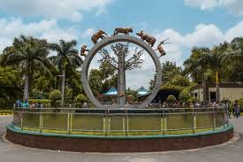

Nehru Zoological Park
Nehru Zoological Park is one of the largest zoos in India, located near Mir Alam Tank in Hyderabad. It houses a diverse collection of animals, birds, and reptiles, including endangered species.
Location: Hyderabad, Telangana, India
Ticket Price: INR 50 for adults, INR 30 for children (Indian nationals); INR 100 for adults, INR 60 for children (foreign nationals)
Transportation: Accessible by road, well-connected by local buses and taxis. Nearest metro station is Zoo Park.